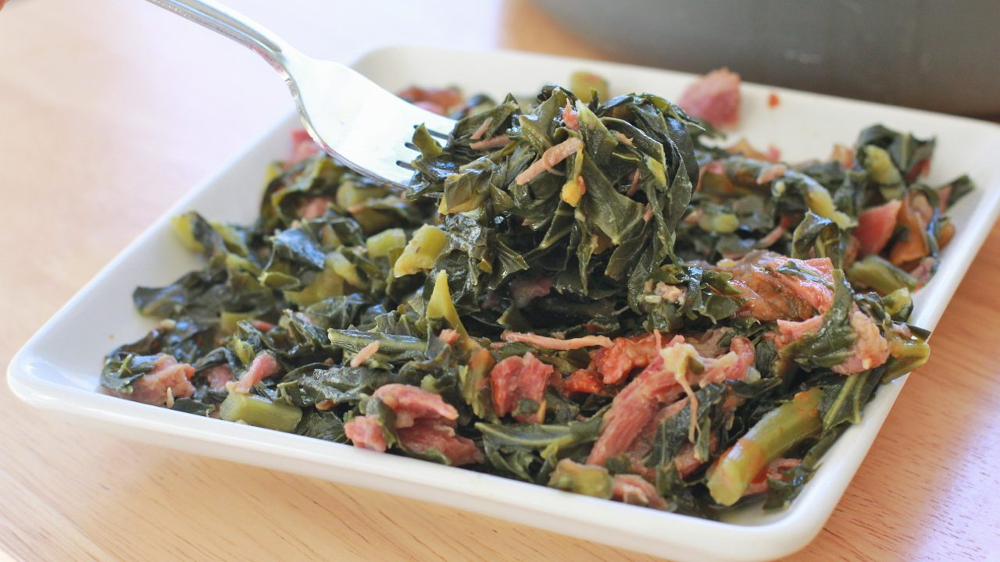

Let’s get started!
What are Collard Greens?
Collard greens are what I would consider the staple green vegetable of the south. They belong to the Brassica oleracea plant species like most green vegetables including cabbage (link to cabbage rolls), spinach and kale. They are available all year round with a peak season in the winter and early spring.
What ingredients are needed for Collard Greens?
- Collard Green
- Ham Hock/Smoked Turkey
- Onion
- Garlic Powder
- Paprika
- Crushed Red Pepper
- Seasoning Salt
- Tony Creole Seasoning
- Crushed Garlic
How to Make the Best Collard Greens:
- Start by pulling and tearing greens away from stems. Take a hand full of greens, roll them up and cut the rolls horizontally into small pieces. We personally remove the stems but this is a personal decision.
- Next, add greens to empty clean sink and wash them removing all grit, sand and debris thoroughly with cold water until water becomes clear.
- Next rinse the ham hock very well then add to a large pot along with enough water to fully submerge the ham hock then cover with a lid. Cook over medium high heat for about 45 minutes or until ham hock is near being tender.
- Once ham hock is almost tender, add greens and about 4-5 additional cups of water or enough to just barely cover greens to the pot. This will become your pot likker.
- Add along the rest of the ingredients to the pot and cook while covered for at least 2 hours or until completely tender. Most water should have evaporated by this point just having enough to barely cover the greens.